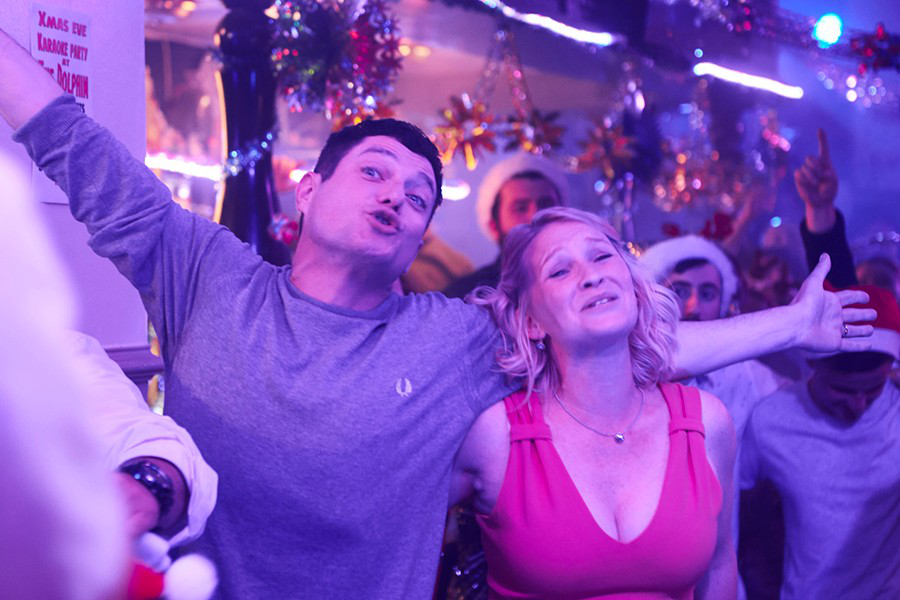
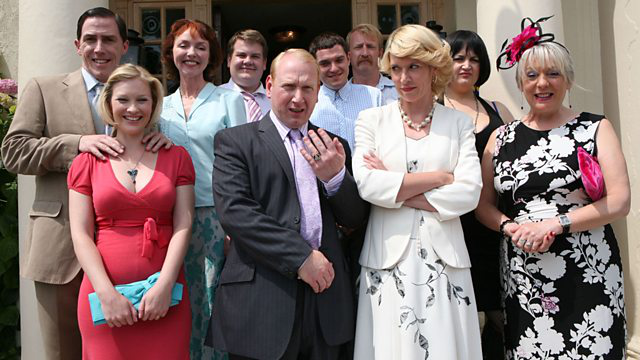
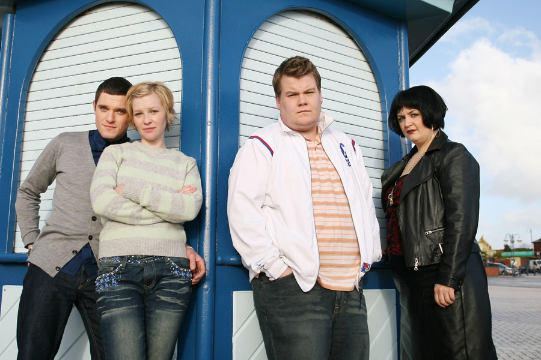

IT'S OCCURRING? Gavin & Stacey’s Joanna Page says there will be ‘one more special’ after epic Christmas cliffhanger – but no new series
Beth Neil
29 Nov 2020, 7:00Updated: 25 Nov 2020, 10:26
GAVIN and Stacey fans were left on tenterhooks after the long-awaited return of the hit show last Christmas.
Thankfully, actress Joanna Page, who plays bright-eyed Welsh girl Stacey, has said there will be “one more special” after the cliffhanger left at the end of the 2019 show.
Gavin and Stacey actress Joanna Page has said there will be 'one more special' of the hit show.
The BBC has confirmed the happy news as it unveiled its Christmas line-up and announced Gavin & Stacey would return "one day".
Currently show creators James Cordon and Ruth Jones haven’t given any indication on when they are planning future episodes.
Speaking to Fabulous, our cover star Joanna said: “As a fan, surely they’ve got to do another one.
“I don’t think we’d ever do another series because I don’t think we could get everyone together for long enough, but I can’t imagine they could leave it the way they did. One more special, then done.”

Joanna said she doesn't think they will ever do another series as it is so hard to get everyone together for long enough.
Last year’s eagerly anticipated perfection of a Christmas special became the most watched scripted show of the decade.
More than 17 million tuned in to see how Gavin, Stacey, Smithy and Nessa (and Pam, Mick, Gwen and Bryn) were doing.
Joanna said: “I didn’t ever feel the pressure of whether people would enjoy it or not, it was all about the experience of being with all of these people again.
“I hadn’t seen Mat Horne in years and I phoned him and said: ‘Do you fancy meeting up for a drink before we go to this read-through?’ and honest to god it was like we’d just seen each other the day before.

Joanna said she didn't feel pressure as to if people would enjoy last year's Christmas special as she was just so happy to be reunited with the cast
“Then when we walked into the read-through I saw James and just held his head in my hands going: ‘Oh, look at you!’
“Everyone was exactly the same.
“I remember Mat said to me: ‘You’ve got the first line, don’t f**k it up’, but as soon as we opened our mouths it was like the first series again.”

Last year's Christmas special was a ratings boon for the Beeb, according to its director of TV, Charlotte Moore.
But she did reveal that a follow-up special in 2020 was never on the cards.
"That wasn't something that was going to happen this year," Moore revealed.
But then she dropped the bombshell: "One day."